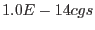

| Parameter | Mand | Type | Default | Constraints |
| prefixm | yes | string | | |
Detector and exposure identifiers (eg. "1S001 2S002") for the MOS exposures
(in the example MOS1 S001 and MOS2 S002) to be processed.
|
| prefixp | yes | string | | |
Detector and exposure identifiers (eg. "S003") for the PN exposures
(in the example PN S003) to be processed.
|
| verb | yes | int | 4 | |
SAS verbosity level.
|
| scale | yes | real | 0.5 | |
Energy fraction, which sets the exclusion radius of point sources.
|
| rate | yes | real | 1.0 | |
Flux threshold (in units of  for the exclusion of point sources.
|
| dist | yes | real | | |
Minimum separation in arc seconds between masked sources.
|
| elow | yes | int | 400 | |
The low energy for the band in eV
|
| ehigh | yes | int | 1250 | |
The high energy for the band in eV
|
| clobber | no | boolean | yes | T/F |
Clobber existing files?
|
| Parameter | Mand | Type | Default | Constraints |